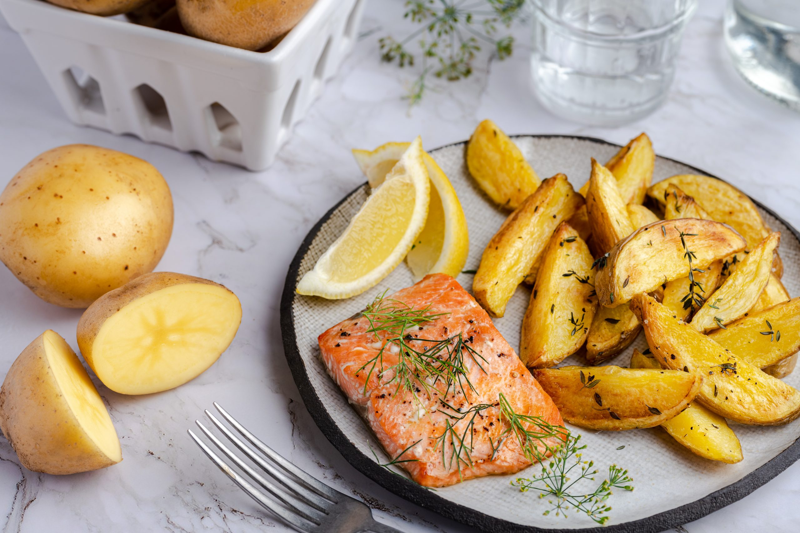
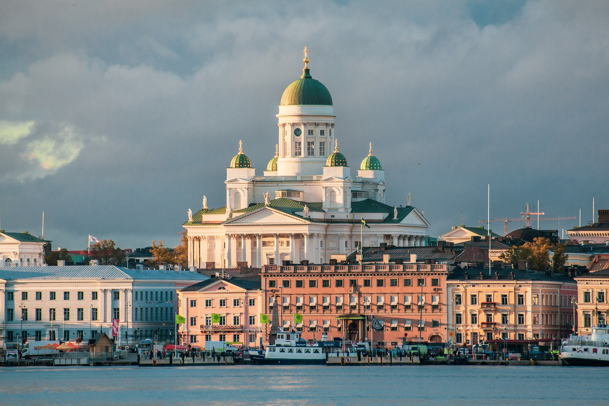
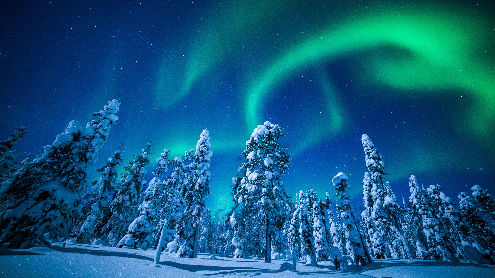
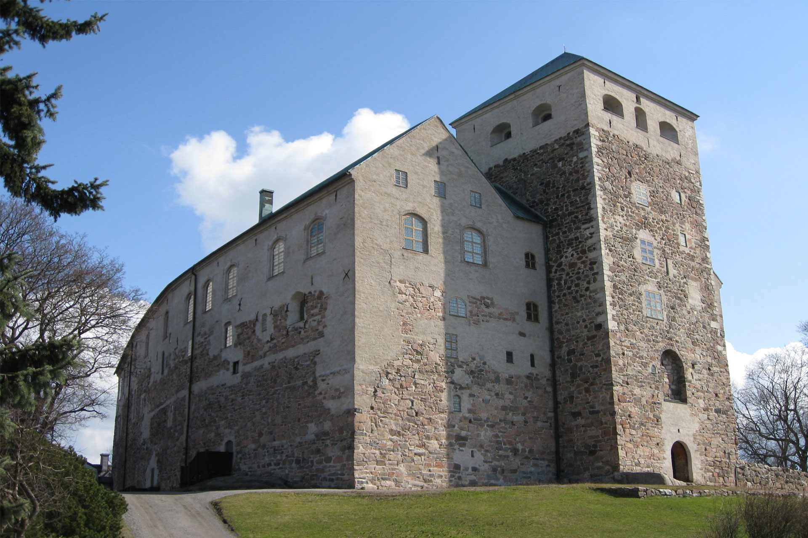
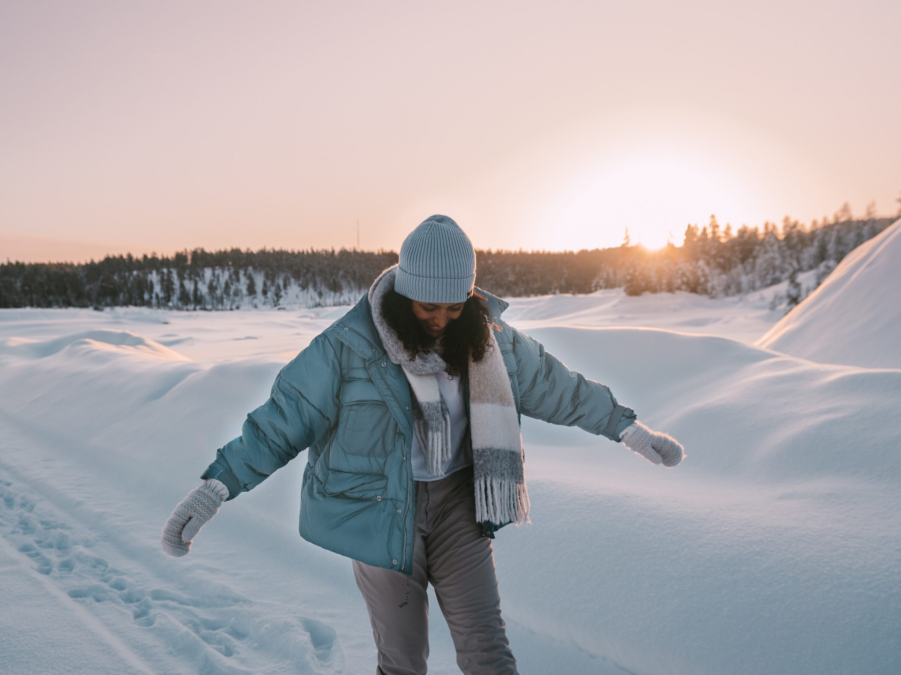

History
Culture
Finnish cuisine generally combines traditional country fare and contemporary style cooking. Potato, meat and fish play a prominent role in traditional Finnish dishes. Finnish foods often use wholemeal products (rye, barley, oats) and berries (such as bilberries, lingonberries, cloudberries, and sea buckthorn). Milk and its derivatives like buttermilk are commonly used as food and drink. The most popular fish food in Finland is salmon.
Finland has the world's second highest per capita consumption of coffee. Milk consumption is also high, at an average of about 112 litres (25 imp gal; 30 US gal), per person, per year, even though 17% of the Finns are lactose intolerant.

Destinations
Helsinki (Capital City)
Senate Square – Neoclassical architecture.
Suomenlinna – UNESCO-listed sea fortress.
Market Square (Kauppatori) – Try salmon soup & fresh berries.

Lapland (Rovaniemi & Levi)
Santa Claus Village – Meet Santa year-round!
Northern Lights – Best seen in winter (September–March).
Husky & Reindeer Safaris – Experience Arctic adventures.

Turku
Turku Castle – Medieval fortress.
Archipelago Sea – A stunning island network.

Travel Tips
Language: Finnish & Swedish are official, but English is widely spoken.
Tipping: Not required (service is included in bills).
Weather: Dress warmly in winter (layers are key!).

Location
Other Recommendations